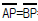
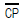
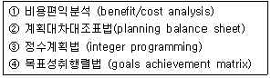

도시계획기사 (2003-08-31 기출문제)
1과목: 도시계획론
1. 도시지역에 있어 기능상의 편의와 권위 때문에 도심에 도시기능의 집중이 나타나는 현상과 가장 관계가 큰 요인은?
- 공간력
- 원심력
- 구심력
- 집적불이익
(정답률: 알수없음)

2. 동일한 도시권에 속하는 도시문제를 광역적으로 관리하는 방식 중에서 민주성이 가장 높은 것은?
- 협의회에 의한 공동처리방식
- 행정구역 변경에 의한 방식
- 자치단체조합의 설치방식
- 광역정부의 설치방식
(정답률: 알수없음)
3. 무작위로 추출된 집단의 통행 기점과 종점, 목적, 통행수단, 도착시간 등을 조사하는 교통계획 기법은?
- 통행 수요 자료조사(OD 조사)
- 교통 서비스 수준조사(교통량 평가)
- 통행 분배 모델(動모델)
- 통행수단 분담 모델(로짓모델)
(정답률: 알수없음)
4. 다음 중 생활권 계획상 도서관과 도매시장, 종합병원, 복지회관 등의 시설배치를 필요로 하는 생활권 규모는?
- 근린생활권
- 소생활권
- 중생활권
- 대생활권
(정답률: 알수없음)
5. 우리 나라에서 도시화가 진행 되어온 가장 큰 원인은?
- 도시 인구의 자연 증가 때문
- 도시의 급속한 공업화 때문
- 농촌의 도시로의 변모 때문
- 농촌 인구의 도시 이주 때문
(정답률: 알수없음)
6. 제3세계의 도시화에 대한 설명으로 틀린 것은?
- 흡입요인에 의한 가도시화
- 과잉도시화에 의한 도시문제 유발
- 급격한 도시화 과정
- 종주도시화와 지역적 불균형
(정답률: 알수없음)
7. 다음 중에서 도시 토지 투기를 유발하는 가장 직접적 원인은?
- 개발이익의 사유화
- 인구의 증가
- 토지의 비효율적 이용
- 토지 시장정보의 부족
(정답률: 알수없음)
8. 기능의 재편 형태를 기준으로 한 도시재개발의 유형 중 관계가 먼 것은?
- 본래의 기능을 신기능으로 대체한다.
- 본래의 기능을 제고 또는 회복한다.
- 본래의 기능에 새로운 기능을 추가한다.
- 새로운 기능에 대한 장기적인 개발을 구상한다.
(정답률: 알수없음)
9. 인구추계 방법 중 신흥 공업도시와 같은 급성장 도시에 적합한 방식은?
- 산술급수 증가 방식(직선식)
- 로지스틱 커브 방식(지수함수식)
- 인구생잔법(요인별 인구조성법)
- 기하급수 증가 방식(곡선식)
(정답률: 알수없음)
10. 다음 중 가장 기본적인 도시공간 조직원리는?
- 중심지이론
- 다핵심이론
- 동심원이론
- 부문(선형)이론
(정답률: 알수없음)
11. 도시 관리측면에서 추구해야 할 도시생활의 목표로 가장 적당하지 않는 것은?
- 능률성
- 신속성
- 편리성
- 안정성
(정답률: 알수없음)
12. 다음 중 급속성장형 대도시에서 발생하는 과대, 과밀도시의 문제가 아닌 것은?
- 생활환경시설의 부족과 교통 및 도시공해
- 도시경관의 혼란, 획일화와 쾌적성 상실
- 산업의 정체와 상대적 쇠퇴에 의한 고용 감소
- 지역공동체의식의 희박화와 개인주의의 팽배
(정답률: 알수없음)
13. 다음 중 도심 직장에 근무하는 맞벌이 부부 가구의 입찰 지대곡선(bid rent curve)을 여타 가구의 그것과 비교할 때 맞지 않는 것은?
- 도심 위치에서 맞벌이 가구의 곡선의 y -절편이 더 높다.
- 도심으로부터 특정거리에서 두 곡선간에 교점이 발생한다.
- 전반적으로 맞벌이 가구의 곡선의 기울기가 항상 더 가파르다.
- 도시 전역에서 맞벌이 가구의 곡선이 항상 상위에 위치한다.
(정답률: 알수없음)
14. 신도시개발에 대한 설명 중 옳지 않은 것은?
- 협의적 의미의 신도시는 생산, 유통, 소비의 모든 기능을 갖춘 독립도시로서 새로이 개발되는 것을 의미한다.
- 신도시 분류의 정확한 기준이 되는 것은 모도시로 부터의 거리와 도시규모이다.
- 신도시는 사업의 주체에 따라서 공영개발방식과 민간 개발방식으로 구분된다.
- 신도시 개발이란 사전에 예정된 기간안에 특정지역 범위에 대해 다양한 사회적, 경제적 활동과 물리적 요소를 사전 계획에 의하여 제공하는 개발이다.
(정답률: 알수없음)
15. 복합사회의 특성을 설명한 것 중 거리가 먼 것은?
- 산업의 고도화
- 사회구조의 다양성
- 가치체계의 다양성
- 문화의 표준화
(정답률: 알수없음)
16. 이론상 사회적차원의 적정 도시규모의 조건은?
- 한계편익 = 한계비용
- 최소비용
- 최대편익
- 평균편익 = 평균비용
(정답률: 알수없음)
17. 인구변동을 추정하는데 가장 효용도가 낮은 변수는?
- 경제활동인구
- 전년도 인구수
- 유입인구
- 사망인구
(정답률: 알수없음)
18. 동심원이론에서 중심업무지구와 가장 가까운 곳에 위치해 있는 지대는?
- 중산층주택지대
- 노동자주택지대
- 점이지대
- 통근자지대
(정답률: 알수없음)
19. 도시와 지역에 관련된 용어의 개념 중 틀린 것은?
- 교통의 결절지점을 중심으로 한 영향권을 역세권이라 한다.
- 미국의 대도시권(Metropolitan Statistical Area)은 인구 5만 이상의 중심도시가 하나 이상 포함된다.
- 우리 나라의 수도권은 서울특별시와 인천광역시, 그리고 경기북부 지역으로 구성되어 있다.
- 거대도시권(Megalopolis)이란 대도시권이 연담되어 있는 대규모 도시지역을 의미한다.
(정답률: 알수없음)
20. 세계화 · 지방화라는 변화된 사회환경 속에서 문화영역의 역할이 도시발전을 위해 중요시되고 있다. 이와 관련된 다음 설명 중 틀린 것은?
- 개별 도시민들의 정체성과 사회적 통합을 해체하여 공간적 세계화를 이루려는 시도이다.
- 문화산업의 발전을 위해 멀티미디어 산업과 같은 상업적 문화산업에 중점을 둔다.
- 각 도시의 독특한 역사와 문화의 중요성이 강조되고 있다 .
- 도시이미지를 새롭게 구축하고 도시경제 활성화를 위해 도시에 따라 다양한 전략이 사용된다.
(정답률: 알수없음)
2과목: 도시설계 및 단지계획
21. 토지이용계획을 수립함에 있어 정량적인 예측변수가 아닌것은?
- 가구규모와 구성
- 인구규모와 구성
- 생활양식의 변화
- 고용자수
(정답률: 알수없음)
22. 입체횡단보도 설치 기준이다 옳지 못한 것은?
- 입체 횡단보도는 횡단보도교(육교)와 지하횡단보도로 구분한다.
- 계단부의 단높이는 15cm이하로 하고 단폭은 30cm 이상으로 할 것
- 시간당 3,000인 이상이 통행하는 횡단로는 이를 입체 횡단도로로 설치해야 한다.
- 보행자수가 80(인/분)미만인 경우 횡단보도교의 폭은 1.5m이상으로 한다.
(정답률: 알수없음)
23. 주차장의 주차단위구획시 주차대수 1대의 너비와 길이는 각각 몇 m 이상이 되어야 하는가 ? (지체장애인의 전용 주차장이 아닌 경우)
- 2.3m, 5m
- 3.3m, 5m
- 2.3m, 6m
- 3.3m, 6m
(정답률: 알수없음)
24. 산업단지의 토지이용계획에 있어서 녹지와 공원의 면적비율은 최소한 어느 정도 확보되는 것이 바람직한가?
- 50 ∼ 60%
- 30 ∼ 40%
- 20 ∼ 30%
- 10 ∼ 20%
(정답률: 알수없음)
25. 가로 교차로에서 실시하는 가각전제(街角剪際)의 실시 이유로서 합당치 않은 것은?
- 노상주차를 확보하기 위해서 이다.
- 전방투시가 잘되도록 하기 위해서 이다.
- 교통혼잡을 완화하기 위해서 이다.
- 차량의 회전을 용이하게 하기 위해서 이다.
(정답률: 알수없음)
26. 다음 중 단지계획의 일반적 목적이 될 수 없는 것은?
- 인간활동을 시간적 공간적으로 보조
- 사생활(privacy)보호을 위해 거주자 상호간의 접촉을 최소화
- 거주자의 건강
- 건설비와 유지관리비 절감
(정답률: 알수없음)
27. 총주택용지가 100,000m2이고, 토지이용비율이 주택용지 50%, 일반건축용지 15%, 녹지용지 15%, 교통시설용지 20%이며, 용적률이 100% 일 때 단위 세대의 주택규모가 100m2인 주택을 몇 세대 계획할 수 있는가?
- 300세대
- 400세대
- 500세대
- 600세대
(정답률: 알수없음)
28. 여러가지 지형의 경사에 관한 설명 중 틀린 것은?
- 4% 이하의 경사는 거의 평탄하게 보인다.
- 4 - 10%의 경사는 완만한 경사로 보이지만 토지조성은 곤란하다.
- 10% 이상의 경사는 오르내리는데 곤란을 느끼지만 자연경사대로 건축할 수 있다.
- 25% 이상의 경사지는 잔디를 심더라도 잔디깎기 기계를 사용 못한다.
(정답률: 알수없음)
29. 도시의 개방공간(open space)에서 시민이 얻을 수 있는 만족감이 아닌 것은?
- 생활의 풍요로움
- 제한된 도시생활의 연속
- 자발적 활동
- 자유감
(정답률: 알수없음)
30. 다음은 단독 및 공동주택단지의 가구구성에 관한 설명이다. 이 중 틀린 것은?
- 단독주택지 - 소가구 구성시 보통 인지 가능한 획지의 수가 10∼12라고 보면 가구의 길이는 90∼130m 의 범위가 적당하다.
- 공동주택지 - 연립주택은 경관상 단독주택지내에 혼재 되어도 무리가 없고 보통 한 동이 12∼18호로 구성되는 것이 좋다.
- 단독주택지 - 가구의 단변길이를 조작할 수 있는 요소는 세장비이며, 이때 단변의 길이는 가구규모에 따라 30∼50m 의 범위를 갖게 된다.
- 공동주택지 - 아파트단지의 경우는 최소대지면적은 3㏊ 이상이 되어야 하며 생활편익시설을 모두 갖추기 위해서는 30∼50㏊ 정도가 되어야 바람직하다.
(정답률: 알수없음)
31. 단지개발 기법으로 적합하지 않은 것은?
- 기존의 자연지형을 최소한도로 변형시켜 건물을 입지 시킨다.
- 기존의 식생을 최대한 보전할 수 있도록 건물을 입지 시킨다.
- 건물과 건물사이의 간격은 일조· 채광· 통풍 등을 고려하여 적절한 거리를 유지하도록 한다.
- 태양열의 이용을 최대로 하기 위해 가급적 수목의 배식 비율을 줄인다.
(정답률: 알수없음)
32. 공동주택단지의 토지이용 비율 중 주택용지 비율에 관한 서술이다. 적합하지 않은 것은?
- 주택용지 비율은 단지의 주택유형에 따라 달라진다.
- 주택용지 비율은 단지의 규모에 따라 영향을 받는다.
- 주택용지 비율은 단지의 환경에 영향을 준다.
- 주택용지 비율이 높으면 주택의 일조환경이 나빠진다
(정답률: 알수없음)
33. 주택배치계획의 단계로 보아 가장 뒤로 미루어지는 것은?
- 지형
- 인동간격
- 상하수도
- 건물의 폭과 길이
(정답률: 알수없음)
34. 다음 중 공동구의 설치로 인한 이점이 아닌 것은?
- 도시미관의 향상
- 초기 설치비용의 절감
- 설비갱신의 용이
- 방재효율의 향상
(정답률: 알수없음)
35. 다음 시설 중 주택단지의 부대시설로 가장 적합한 항은?
- 교회 - 세탁소 - 미용원 - 수퍼마켓
- 양화점 - 약국 - 미곡상 - 백화점
- 구두수선 - 세탁소 - 미곡상 - 백화점
- 경찰서 - 약국 - 이용원 - 수퍼마켓
(정답률: 알수없음)
36. 다음 중 기능에 따른 도시계획도로의 위계 분류가 옳은 것은?
- 도시고속도로 - 주간선도로 - 보조간선도로 - 국지도로 - 집산도로
- 주간선도로 - 도시고속도로 - 보조간선도로 - 국지도로 - 집산도로
- 도시고속도로 - 주간선도로 - 보조간선도로 - 집산도로 - 국지도로
- 도시고속도로 - 보조간선도로 - 주간선도로 - 국지도로 - 구획도로
(정답률: 알수없음)
37. 린치(Kevin Lynch)는 외부공간의 크기와 비례로서 공간의 특성을 설명하고 있다. 인간과 직접적인 관계를 갖고 감정을 교류할 수 있는 거리는 얼마인가?
- 1 ∼ 3m
- 5 ∼ 7m
- 8 ∼ 10m
- 10 ∼ 15m
(정답률: 알수없음)
38. 단지 건설비를 줄일 수 있는 입지조건이 아닌 것은?
- 급한 경사지를 피할 것
- 단지의 구배가 0%인 곳을 택할 것
- 암반이 지표에 노출된 것을 피할 것
- 상하수도 시설이 단지에 인접한 지역을 택할 것
(정답률: 알수없음)
39. 주거단지계획에서 쿨데삭(cul-de-sac)과 같은 도로망의 장점이 아닌 것은?
- 차량과 분리된 보행자 도로를 확보할 수 있다.
- 오픈 스페이스(open space)를 효과적으로 확보할 수 있다.
- 단지내 통과교통을 줄일 수 있다.
- 단지내 교통을 균등하게 분산시킬 수 있다.
(정답률: 알수없음)
40. 다음은 도시계획과 단지계획의 차이점 및 관계를 논한 것이다. 틀린 것은 어느 것인가?
- 도시계획은 일반적으로 도시전체를 대상으로 하며 단지계획은 도시내 일부지역을 대상으로 한다.
- 도시계획은 토지이용계획이 기본이 되나 단지계획은 토지이용계획을 필요로 하지 않는다.
- 단지계획은 도시계획을 상위계획으로 하며, 하위계획인 개별 건축계획의 지침이 된다.
- 기존 법체제 하에서 도시계획은 법정계획이지만 단지계획은 법정계획이 아니다.
(정답률: 알수없음)
3과목: 도시개발론
41. 다음 삼각측량의 작업순서를 옳은 순서대로 배열된 것은 어느 것인가? (A: 선점, B: 각측량, C: 편심조정, D: 기선측량, E: 계산, F: 조표)
- A-B-C-D-E-F
- A-C-F-B-E-D
- A-F-E-D-C-B
- A-F-D-B-C-E
(정답률: 알수없음)
42. 그림에서 B→ P의 방위각은? (단, A→ B의 방위각은 115° 25′ 20″ , α =66° 17′ 12″ , γ =56° 18′ 16″ )
- 58° 00′ 48″
- 121° 59′ 12″
- 148° 09′ 12″
- 238° 00′ 48″
(정답률: 알수없음)
43. 5mm+5ppm의 정확도를 갖는 광파 측거기를 사용한다고 할때, 2,000m의 거리에서 예측되는 표준오차는 얼마인가?(단, 구심오차는 무시함)
- 7.07mm
- 10.00mm
- 11.18mm
- 3.87mm
(정답률: 알수없음)
44. 두 개 이상의 주제도로부터 새로운 정보를 추출하기 위해 사용되는 분석 기법은?
- 중첩분석
- 표면분석
- 인접성 분석
- 조직망(network) 분석
(정답률: 알수없음)
45. 길이 1,800m를 50m 줄자로 측정할 때 줄자에 의한 측거 오차를 50m에 대하여 ± 6mm라 할때 전길이 측정에 생기는 오차는?
- ± 0.16mm
- ± 16mm
- ± 0.36mm
- ± 36mm
(정답률: 알수없음)
46. 시거측량을 한 결과 다음과 같은 결과를 얻었다. 수평거리 D와 고저차 H는 얼마인가?(단, 협장(狹長) ℓ =1.8m, 연직각 α =15° , K = 100, C = 0.2 )
- H = 45m, D = 168m
- H = 56m, D = 172m
- H = 64m, D = 186m
- H = 75m, D = 198m
(정답률: 알수없음)
47. 표고가 118m와 145m인 두 점 사이의 수평거리가 250m이며 등경사지일 때 130m의 등고선이 통과하는 지점은 118m 표고점에서 수평거리로 얼마인가?
- 9.9m
- 102m
- 1⑤m
- 111m
(정답률: 알수없음)
48. 삼각망 중에서 가장 정도가 높은 망은?
- 유심 삼각망
- 사변형 삼각망
- 단열 삼각망
- 모두 정도가 같다.
(정답률: 알수없음)
49. 다음 중 자료기반의 장점이 아닌 것은?
- 통제의 집중화를 이룰 수 있다.
- 자료기반에 관한 소프트웨어와 이와 관련된 처리장비가 저렴하다.
- 자료기반의 새로운 응용분야에 적용시키는 것이 용이하게 된다.
- 자료의 중복을 방지할 수 있다.
(정답률: 알수없음)
50. 지형도 1/25,000에서 963m의 산정으로부터 423m의 산밑까지의 측정치가 95mm였다. 이때 사면의 경사는 얼마인가?
- 약 1/7.4이다.
- 약 1/6.4이다.
- 약 1/5.4이다.
- 약 1/4.4이다.
(정답률: 알수없음)
51. 다음 중 인터넷 지형공간정보체계의 특징이 아닌 것은?
- 클라이언트/서버 체계의 통합 체계이다.
- 대화형체계이다.
- 하이퍼텍스트(hypertext) 정보체계이다.
- 집중형 체계이면서 실시간으로 정보 체계에 접속이 가능하다.
(정답률: 알수없음)
52. A,B,C 세점에서 삼각수준측량에 의해 P점 높이를 구한 결과 각각 365.13m, 365.19m, 365.02m이었다. 그 거리가

=2km,
=3km 일 때 P점의 표고는?- 365.125m
- 365.425m
- 365.824m
- 366.180m
(정답률: 알수없음)
53. LANDSAT 위성에 관하여 틀린 설명은?
- LANDSAT (1,2,3호)은 RBV와 MSS 두 개의 탐측기를 탑재하고 있다.
- LANDSAT 위성은 HRV 탐측기를 탑재하고 있다.
- LANDSAT (1,2,3호) 위성들은 103분에 한번씩 하루에 14번 지구를 회전한다.
- LANDSAT(4,5호)은 MSS와 TM 두 개의 탐측기를 탑재하고 있다.
(정답률: 알수없음)
54. 시거측량에 있어서 지형의 경사가 급할수록 고저차 측정값에 가장 큰 영향을 미치는 것은?
- 협장 측정 오차
- 연직각 측정 오차
- 협장과 연직각 측정오차가 거의 같은 영향을 미친다.
- 시거정수 중 가정수 오차
(정답률: 알수없음)
55. 다음중 수준측량의 용어 중 맞는 것은?
- 전시는 전후의 측량을 연결할 때 사용한다.
- 후시는 기지의 측점에 세운 표척의 읽음값이다.
- 기계고는 지면에서부터 망원경 중심까지의 높이이다.
- 수준면은 각 측점에서 지구 중심에 직각으로 이루어진 곡면이다.
(정답률: 알수없음)
56. 양차가 0.01m이 되기 위한 수평거리는 얼마인가?(단, k = 0.14, 지구곡률반지름(R) = 6,370km)
- 400m
- 395m
- 390m
- 385m
(정답률: 알수없음)
57. 다음 중 점 형태의 자료에 대한 공간분석에 사용되는 방법은?
- 형상관측
- 프랙틀 차원해석
- 최근린 방법
- 공간적 자동상관관계
(정답률: 알수없음)
58. 삼각점 A부터 B점에 대한 방향각은 109° 18′ 30″ , A점에 대한 진북방향각은 -0° 36′ 18″ , 자침편각은 서편 6° 10′ 30″ 라 할때 AB의 자침방위각은 얼마인가?
- 116° ⑤′ 18″
- 114° 52′ 48″
- 108° 42′ 18″
- 109° 54′ 48″
(정답률: 알수없음)
59. 원의 직경을 측정하여 50m± 0.2m를 얻었다. 이것으로 부터 계산한 원의 면적에 생긴 오차는 얼마 정도인가?
- ± 14.6m2
- ± 15.0m2
- ± 15.7m2
- ± 16.2m2
(정답률: 알수없음)
60. 거리측량에 있어서 우연오차에 관한 설명 중 해당하지 않는것은?
- 우연오차는 부호와 크기가 불규칙하게 나타난다.
- 정오차와 과오를 소거시키고 남는 오차이다.
- 같은 크기의 정(+)오차와 부(-)오차의 발생확률은 같다.
- 오차의 크기나 방향이 일정한 오차이다.
(정답률: 알수없음)
4과목: 국토 및 지역계획
61. 우리 나라 현재의 국토 이용 패턴으로서 가장 알맞게 설명된 것은?
- 서울 1점 중심의 토지이용
- 서울과 부산을 잇는 국토 중앙 축에의 인구 및 산업시설 집중
- 전국 각지역의 균형 발전
- 동해안과 서해안의 집중 개발
(정답률: 알수없음)
62. 제3차 국토종합개발계획에서 추진하였던 신산업지대 중 기초소재형 임해산업과 조립가공형 내륙공업거점 구축을 개발 방향으로 지정된 신산업지대는 어느 것인가?
- 아산만 - 대전 - 청주
- 군산· 장흥 - 이리 - 전주
- 청주 - 괴산 - 중평
- 강릉 - 속초 - 동해
(정답률: 알수없음)
63. 국토 및 지역계획의 목표는 경제성장의 효율성과 소득분배의 형평성을 확보하는 것이지만, 두가지를 동시에 만족하지 못하는 경우가 많다. 이와 같은 관계를 무엇이라 하는가?
- trans-off
- trade-off
- trade-over
- trans-over
(정답률: 알수없음)
64. 개발권 양여제도(T.D.R.)에 대한 설명이 아닌 것은?
- 미국 뉴욕시에서 고안된 것으로 역사적 건조물의 보전을 위해 시행되었다.
- 어떤 토지에 규정되어 있는 개발허용한도 가운데 미사용 부분을 다른 토지에 이전하여 토지이용을 실현하는 권리이다.
- 실제 적용된 예는 많지 않으나 보전과 개발, 재개발과의 조화를 도모할 수 있는 제도이다.
- 토지이용의 분산을 도모하기 위한 것으로 대도시 문제해결을 위해 도입된 제도이다.
(정답률: 알수없음)
65. 크리스탈러(Walter Christaller)의 K = 3 배열에서 특정 계층의 중심지간 거리가 4마일일 때 차상위 계층의 중심지간 거리는?
- 약 5 마일
- 약 7 마일
- 약 9 마일
- 약 12 마일
(정답률: 알수없음)
66. 우리나라 국토기본법에 근거한 국토계획 유형으로 틀린것은?
- 국토종합계획
- 지역계획
- 수도권정비계획
- 부문별계획
(정답률: 알수없음)
67. 제조업이나 상업활동에 관련된 쇄신이 도시계층을 따라 전파되는 과정을 가장 체계있게 종합한 사람은 누구인가?
- Beckman
- Hudson
- Berry
- Pederson
(정답률: 알수없음)
68. 다음은 인구이동모형에 대한 설명이다. 바르게 설명하지 못한 것은?
- 마코브모형(Markovian Models)은 동태적 인구 이동 과정을 서술하였다
- 로리(Lowry)모형은 경제적 변수와 중력모형의 변수를 결합한 모형이다
- 토다로(M.Todaro)는 도농간 실제소득의 차이가 인구 이동을 결정한다고 분석했다
- 모릴(Morril)은 인구이동에 미치는 비경제적 변수에 연구 촛점을 두었다
(정답률: 알수없음)
69. 지역 문제해결을 위해 여러 가지 대안을 도출하고 이를 평가하여 최종안을 결정하고자 한다. 이때 사용 가능한 방법들로 모두 짝지워진 것은?

- ①,②,③
- ①,③,④
- ①,②,④
- ②,③,④
(정답률: 알수없음)
70. 도시 체계 속에서 도시 규모가 어떤 모양으로 분포되는가를 설명하는 이론적인 모형이 아닌 것은?
- 순위 - 규모 법칙(rank-size rule)
- 싸이몬의 비례 효과 법칙(the law of proportional effect)
- 엔트로피 극대화 모형(the entropy maximization)
- 변동 - 할당 모형(shift-share method)
(정답률: 알수없음)
71. A와 B지역간의 경계를 레일리(Reilly, W.)법칙에 의해 획정할 때, A에서 분계점까지의 거리는? 단, A - B간 거리: 120㎞, A지역 인구: 40만명, B지역의 인구: 160만명
- 24㎞
- 30㎞
- 40㎞
- 50㎞
(정답률: 알수없음)
72. 산업입지의 선정은 기업자에게 자유롭게 일임하는 것이 원칙인데 국가가 산업입지를 규제하는 이유는?
- 도시와 산업의 분리 배치
- 산업 계열화의 방지
- 적정규모의 산업 집중과 초과산업의 분산
- 서울, 부산등 대도시에 대한 산업의 중점 배치
(정답률: 알수없음)
73. 국토 및 지역개발의 방법으로서의 광역개발의 취지는 어디에 있는가?
- 생산권과 생활권의 개발 및 연쇄화
- 국민의 소비성향의 향상
- 생산권만의 집중적 개발
- 정치적 행정적인 측면에서 인구분산
(정답률: 알수없음)
74. 다음 중 독일의 도시계획관련 제도는?
- ZAC
- Structure Plan 과 Local Plan
- F-plan 과 B-plan
- PUD
(정답률: 알수없음)
75. 초기 독일의 국토계획의 의의와 관계가 적은 것은?
- 정주지(Siedelung) 건설
- 공업지대의 분산
- 교통계획
- 대도시 건설
(정답률: 알수없음)
76. 지역개발에 있어서 기본 수요 접근 (basic needs approach) 개념과 관련성이 가장 적은 설명은?
- 주로 1970년대 이후에 등장한 새로운 개발 패러다임이다.
- 발전된 개발도상국보다는 빈곤층이 많은 저개발 국가에 더욱 적합한 개발 이론이다.
- 소단위 생활권을 대상으로 형평성보다 능률성을 강조하는 개발 이론이다.
- 밑으로부터 접근(bottom up approach)을 강조하는 생활권 전략이다.
(정답률: 알수없음)
77. 리챠드슨(H.W.Richardson)의 권역 설정방법에 해당되지않는 것은?
- 균일 또는 동질지역(同質地域)
- 결절 또는 거점화 지역(據点化地域)
- 사업 또는 계획지역(計劃地域)
- 수계(水系)또는 행정구역
(정답률: 알수없음)
78. 지역발전을 위해 쇄신(innovation)의 확산을 용이하게 하는 방법으로 올바른 것은?
- 대도시 위주로 개발을 촉진한다.
- 소규모도시 위주로 개발을 촉진한다.
- 농어촌지역의 개발을 촉진한다.
- 성장거점도시의 개발을 촉진한다.
(정답률: 알수없음)
79. 국토계획 및 지역계획의 기초적 분류에서 틀린 것은?
- 정책상 통제주의 국가는 주로 국토계획에 중점을 둔다.
- 정책상 조정주의 국가는 주로 지역계획에 중점을 둔다.
- 기술적 면에서 통제주의 국가는 주로 지역계획에 중점을 둔다.
- 기술적 면에서 조정주의 국가는 주로 지역계획에 중점을 둔다.
(정답률: 알수없음)
80. 우리나라 국토기본법에서 정한 국토관리의 이념으로 적합치 않는 것은?
- 국토의 균형 있는 발전
- 경쟁력 있는 국토여건의 조성
- 환경친화적인 국토관리
- 국토에 따른 사회체제의 개혁
(정답률: 알수없음)
5과목: 도시계획관계법규
81. 도시기본계획의 내용에 포함되지 않는 것은?
- 지역적 특성 및 계획의 방향.목표에 관한 사항
- 토지의 이용 및 개발에 관한 사항
- 건축물의 배치.형태.색채 또는 건축선에 관한 계획
- 공간구조,생활권의 설정 및 인구의 배분에 관한 사항
(정답률: 알수없음)
82. 건축법에 의하면 시.도지사는 지역계획 또는 도시계획상 특히 필요하다고 인정하는 경우에는 시장· 군수· 구청장의 건축허가를 제한할 수 있다. 그 사항 중 옳지 않는 것은?
- 건축허가 제한은 2년 이내로 하되 1회에 한하여 1년 연장할 수 있다.
- 건축허가 제한권자인 시· 도지사는 지방도시계획위원회의 심의를 거쳐야 한다.
- 시.도지사는 시장· 군수· 구청장의 건축허가를 제한한 경우에는 즉시 건설교통부장관에게 보고하여야 한다.
- 건축허가권자는 건축허가 제한에 관한 사항을 공고 하여야 한다.
(정답률: 알수없음)
83. 주택건설촉진법상 노후, 불량주택의 범위에 들지 않는 것은?
- 건물이 훼손되거나 일부가 멸실되어 안전사고의 우려가 있는 주택
- 건물이 준공된 후 20년이 경과되어 과다한 수선, 유지비가 소요되는 주택
- 법정년수가 경과되고 부근 토지의 이용상황 등에 비추어 주거 환경이 불량한 주택
- 전체 주민의 95%이상이 재건축허가를 희망하는 주택지구
(정답률: 알수없음)
84. 수도권정비계획법의 대규모 개발사업에 대한 설명으로 적절하지 않은 것은?
- 100만 제곱미터 이상의 주택지조성사업
- 30만 제곱미터 이상의 공장 설립을 위한 공장용지 조성사업
- 관광지조성사업으로서 시설계획지구의 면적이 30만제곱미터 이상인 사업
- 100만 제곱미터 이상의 아파트지구개발사업
(정답률: 알수없음)
85. 개발제한구역의지정및관리에관한특별조치법에 의한 취락 지구(국토의계획및이용에관한법률의 집단취락지구)의 기본적인 지정 기준으로 올바른 것은?
- 취락의 구성 주택수 10호 이상, 또는 1만제곱미터당 주택수가 10호 이상
- 취락의 구성 주택수 20호 이상, 또는 1만제곱미터당 주택수가 20호 이상
- 취락의 구성 주택수 20호 이상, 또는 1만제곱미터당 주택수가 40호 이상
- 취락의 구성 주택수 10호 이상, 또는 1만제곱미터당 주택수가 50호 이상
(정답률: 알수없음)
86. 도시지역안의 도시공원 면적기준(개발제한구역, 녹지지역을 포함한 경우)에 맞는 것은?
- 당해 도시지역 안에 거주하는 주민 1인당 3제곱 미터 이상
- 당해 도시지역 안에 거주하는 주민 1인당 6제곱미터 이상
- 당해 도시지역 안에 거주하는 주민 1인당 9제곱 미터 이상
- 당해 도시지역 안에 거주하는 주민 1인당 12제곱 미터 이상
(정답률: 알수없음)
87. 주택건설촉진법에서 간선시설의 설치비용은 국가가 얼마의 범위안에서 이를 보조할 수 있는가?
- 전부
- 1/2
- 1/3
- 2/3
(정답률: 알수없음)
88. 다음 중 협의의 환지처분에 해당하지 않는 것은?
- 적응환지처분
- 입체환지처분
- 증환지처분
- 감환지처분
(정답률: 알수없음)
89. 자연녹지지역안에서 건축할 수 없는 건축물은?
- 창고시설
- 위락시설
- 관광숙박시설
- 묘지관련시설
(정답률: 알수없음)
90. 국토의계획및이용에관한법률에 의한 국토의 용도지역에 해당되지 않는 것은?
- 자연환경정비지역
- 도시지역
- 관리지역
- 농림지역
(정답률: 알수없음)
91. 국토기본법에서 규정하고 있는 지역계획에 대한 설명으로 옳지 않은 것은?
- 특정지역개발계획 : 특정한 지역을 대상으로 각 부문 계획을 전략적으로 발전시키기 위하여 수립하는 계획
- 개발촉진지구개발계획 : 개발수준이나 소득기반이 현저히 열악한 지역 등을 개발하기 위한 계획
- 광역도시계획 : 광역시와 그 배후지역을 광역적·체계적으로 개발하기 위한 계획
- 수도권발전계획 : 수도권의 인구와 산업의 분산 및 적정 배치를 유도하기 위하여 수립하는 계획
(정답률: 알수없음)
92. 로외주차장의 출구 및 입구를 설치해서는 안되는 곳은?
- 너비 8 m 이고, 횡단구배 10%를 초과하는 도로
- 너비 4 m 미만, 종단구배 10%를 초과하는 도로
- 주차대수 20대로서 너비 5 m 미만의 도로
- 주차대수 200대로서 너비 10 m 이상인 도로
(정답률: 알수없음)
93. 택지개발촉진법에서 환매권의 기술 중 올바른 것은?
- 환매권자는 환매권이 발생할 수 있는 사유가 있을 경우 환매로써 제3자에게 대항할 수 있다.
- 환매권자의 권리의 소멸에 관하여는 공익사업을위한 토지등의취득및보상에관한법률의 규정을 준용할 수 없다.
- 환매권자는 환매권이 발생한 날로부터 2년이내에 환매 할 수 있다.
- 환매권은 예정지구 지정의 해제 사유로만 권리가 발생한다.
(정답률: 알수없음)
94. 다음 중 공청회를 개최하지 않아도 되는 것은?
- 광역도시계획 수립
- 도시기본계획 수립
- 도시개발구역의 지정
- 도시관리계획 입안
(정답률: 알수없음)
95. 수도권안에서의 인구 및 산업의 적정배치를 위하여 수도권의 권역별 구분이 이루어지고 있는데 그것이 바르게 나열되고 있는 것은?
- 과밀억제권역, 자연보전권역, 개발유도권역
- 성장관리권역, 이전촉진권역, 환경보전권역
- 성장관리권역, 개발유도권역, 환경보전권역
- 과밀억제권역, 성장관리권역, 자연보전권역
(정답률: 알수없음)
96. 주택건설촉진법상 다세대 주택의 정의로 맞는 것은?
- 동당 건축연면적 300m2이하이고 3층이하의 주택.
- 동당 건축연면적 660m2이하이고 4층이하의 주택.
- 동당 건축연면적 330m2이하이고 3층이하의 주택.
- 동당 건축연면적 530m2이하이고 4층이하의 주택.
(정답률: 알수없음)
97. 다음 중 도시공원법상 녹지를 그 기능에 따라 세분할 경우 맞는 것은?
- 완충녹지와 경관녹지
- 시설녹지와 경관녹지
- 완충녹지와 휴양녹지
- 자연녹지와 생산녹지
(정답률: 알수없음)
98. 제1종 지구단위계획구역으로 지정할 수 없는 것은?
- 기반시설부담구역
- 미관지구
- 개발제한구역
- 도시개발구역
(정답률: 알수없음)
99. 주차장법에 의한 용어의 정의로서 틀리는 것은?
- 로상주차장이란 도로의 로면 또는 교차점광장의 일정한 구역에 설치된 주차장으로서 일반의 이용에 제공되는 것을 말한다.
- 로외주차장이란 도로의 로면 및 교통광장외의 장소에 설치된 주차장으로서 일반의 이용에 제공되는 것을 말한다.
- 부설주차장이란 도시지역 및 지방자치단체의 조례가 정하는 관리지역안에서의 건축물, 골프연습장 기타 주차수요를 유발하는 시설에 부대하여 설치된 주차장으로서 당해 건축물.시설의 이용자 또는 일반의 이용에 제공되는 것을 말한다.
- 기계식주차장이란 기계식주차장치를 설치한 로상주차장과 로외주차장을 말한다.
(정답률: 알수없음)
100. 도시개발조합에 관한 설명 중 틀린 것은?
- 도시개발구역내의 토지 소유자 7인 이상이어야 한다.
- 정관과 사업계획을 정한 후 조합의 설립과 도시개발사업의 시행에 관하여 지정권자의 인가를 받아야 한다.
- 조합설립 인가신청시 토지면적 3/4 이상에 해당하는 토지소유자의 동의를 받아야 한다.
- 설립 인가일로부터 30일 이내에 등기 하여야 한다.
(정답률: 알수없음)